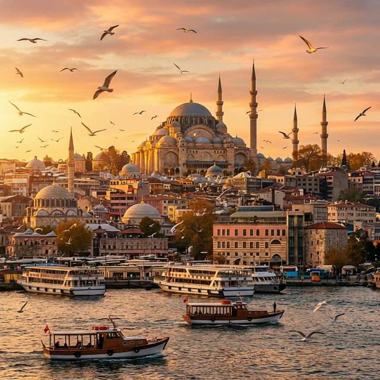
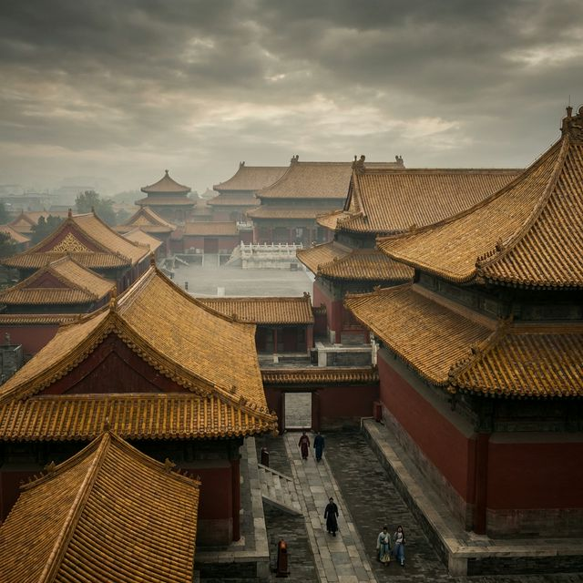
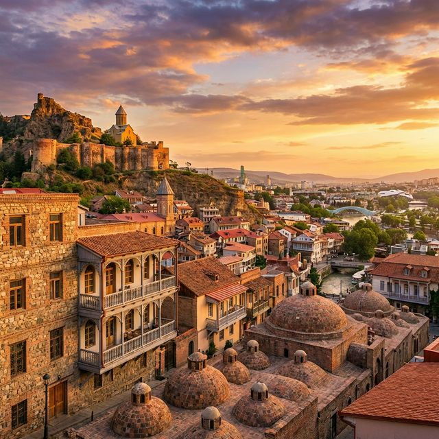
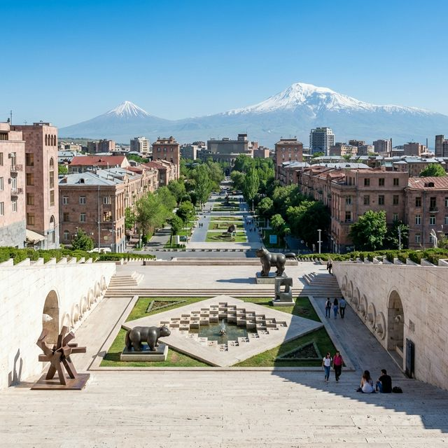
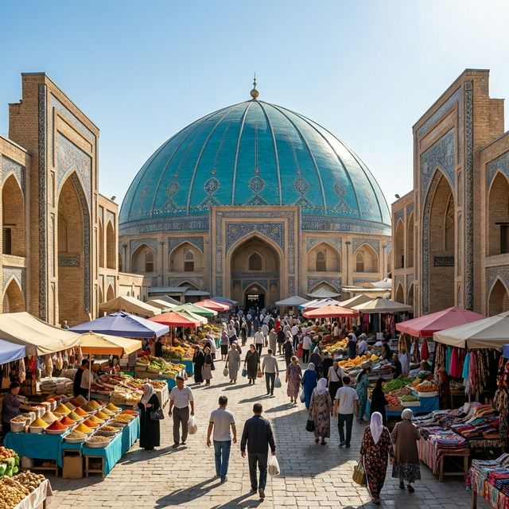

Ультимативный Гайд 2026
Превращаем стыковку в мини-отпуск. Маршруты, цены, GPS транзит.
⏳ Золотое Правило Времени
Выходите в город, только если между рейсами минимум 7–8 часов.
- 1 ч— Паспортный контроль
- 1 ч— Дорога в центр
- 3–4 ч— ЧИСТАЯ ПРОГУЛКА
- 1 ч— Дорога обратно
- 2 ч— Запас
⚠️ Важное предупреждение о ценах
Указанные ниже цены — это оценочный прогноз в долларах США (USD). Курсы валют, инфляция (особенно в Турции) и тарифы могут измениться. Всегда имейте небольшой запас наличных или карту.
🇹🇷
СТАМБУЛ (Турция)
⏱
Маршрут:~6–8 часов
Перекресток Миров

Стамбул — это город-хаос,
который мгновенно заряжает энергией. Единственное место в мире,
где,
позавтракав в Европе,
можно выпить кофе в Азии.
Что увидите:Сердце маршрута — площадь Султанахмет. Стоять между великой Айя-Софией и Голубой мечетью — значит физически ощущать тысячелетнюю историю. Обязательно спуститесь к шумной пристани Эминёню. Там пахнет морем и жареной рыбой — это знаменитый стритфуд «балык-экмек», который продают прямо с раскачивающихся золоченых лодок.
Важный момент:Пройдите пешком по Галатскому мосту, наблюдая за сотнями рыбаков, и посмотрите на Галатскую башню. Город очень рельефный, шумный и вкусный — здесь нужно не столько смотреть, сколько пробовать и вдыхать.
Что увидите:Сердце маршрута — площадь Султанахмет. Стоять между великой Айя-Софией и Голубой мечетью — значит физически ощущать тысячелетнюю историю. Обязательно спуститесь к шумной пристани Эминёню. Там пахнет морем и жареной рыбой — это знаменитый стритфуд «балык-экмек», который продают прямо с раскачивающихся золоченых лодок.
Важный момент:Пройдите пешком по Галатскому мосту, наблюдая за сотнями рыбаков, и посмотрите на Галатскую башню. Город очень рельефный, шумный и вкусный — здесь нужно не столько смотреть, сколько пробовать и вдыхать.
Bus Havaist (HVIST-12)~$8 (60–90 мин)
Метро (M11)~$3 (3 пересадки)
🛂
Документы РФ: Без визы (60 дней непрерывно).
Загранпаспорт должен
действовать 120+ дней.
🇨🇳
ПЕКИН (Китай)
⏱
Маршрут:~6–8 часов
Имперский Размах

Пекин монументален. Даже за пару часов здесь чувствуется
дыхание империи,
которой тысячи лет. Это город огромных пространств и строгой геометрии.
Что увидите:Если вы не рискуете ехать на Великую Стену, отправляйтесь в самый центр — на площадь Тяньаньмэнь. Рядом находится Запретный город — самый большой дворцовый комплекс в мире. Чтобы оценить его масштаб, не обязательно заходить внутрь (это займет полдня), лучше поднимитесь на холм в парке Цзиншань. Оттуда открывается лучший панорамный вид на изогнутые золотые крыши дворца.
Важный момент:Гастрономия здесь — часть культуры. Настоящая утка по-пекински в специализированном ресторане — это ритуал, который нельзя пропустить.
Что увидите:Если вы не рискуете ехать на Великую Стену, отправляйтесь в самый центр — на площадь Тяньаньмэнь. Рядом находится Запретный город — самый большой дворцовый комплекс в мире. Чтобы оценить его масштаб, не обязательно заходить внутрь (это займет полдня), лучше поднимитесь на холм в парке Цзиншань. Оттуда открывается лучший панорамный вид на изогнутые золотые крыши дворца.
Важный момент:Гастрономия здесь — часть культуры. Настоящая утка по-пекински в специализированном ресторане — это ритуал, который нельзя пропустить.
Airport Express~$4 (Быстро, 30 мин)
Такси~$20–25 (Нужен адрес на китайском
!)
🛂
Документы РФ: Безвизовый транзит 144 часа.
Важно: вылет
должен быть в третью страну (не обратно!). В аэропорту
ищите стойку "24/144 Hour Transit".
🇬🇪
ТБИЛИСИ (Грузия)
⏱
Маршрут:~4–6 часов
Душа и
Гостеприимство

Тбилиси — это город,
который обнимает вас как родного. Здесь стыковка превращается не в экскурсию,
а в маленькую жизнь. Город теплый,
холмистый и невероятно фактурный.
Что увидите:Маршрут простой, но эффектный. Канатная дорога поднимет вас из современного парка Рике к древней крепости Нарикала. Весь город будет как на ладони. Спускайтесь пешком по извилистым улочкам к району Абанотубани — знаменитым серным баням с купольными крышами, стоящим прямо в ущелье с водопадом.
Важный момент:Тбилиси нельзя понять без еды. Хинкали, хачапури и бокал вина на террасе старого города — это обязательная часть программы. Здесь никто не спешит, и вам тоже не стоит.
Что увидите:Маршрут простой, но эффектный. Канатная дорога поднимет вас из современного парка Рике к древней крепости Нарикала. Весь город будет как на ладони. Спускайтесь пешком по извилистым улочкам к району Абанотубани — знаменитым серным баням с купольными крышами, стоящим прямо в ущелье с водопадом.
Важный момент:Тбилиси нельзя понять без еды. Хинкали, хачапури и бокал вина на террасе старого города — это обязательная часть программы. Здесь никто не спешит, и вам тоже не стоит.
Автобус #337~$0.50 (В центр)
Такси (Яндекс/Bolt)~$12–15
🛂
Документы РФ: Без визы (365 дней).
Нужен
действующий загранпаспорт.
🇦🇲
ЕРЕВАН (Армения)
⏱
Маршрут:~4–6 часов
Розовый
Город и Джаз

Ереван — солнечный,
построенный из розового туфа,
очень уютный и компактный город. Центр можно спокойно обойти пешком,
наслаждаясь архитектурой и атмосферой вечного праздника.
Что увидите:Главная доминанта — Каскад. Это гигантская лестница из белого камня, украшенная уникальными скульптурами современного искусства со всего мира. Поднимитесь повыше — в ясную погоду оттуда открывается вид на гору Арарат. От Каскада идите к Площади Республики, чтобы увидеть монументальные правительственные здания и поющие фонтаны.
Важный момент:Ереван — город кофеен и джаза. Обязательно сделайте паузу на кофе, сваренный в джазве, и попробуйте пряный ламаджо. Город влюбляет в себя своим интеллигентным спокойствием.
Что увидите:Главная доминанта — Каскад. Это гигантская лестница из белого камня, украшенная уникальными скульптурами современного искусства со всего мира. Поднимитесь повыше — в ясную погоду оттуда открывается вид на гору Арарат. От Каскада идите к Площади Республики, чтобы увидеть монументальные правительственные здания и поющие фонтаны.
Важный момент:Ереван — город кофеен и джаза. Обязательно сделайте паузу на кофе, сваренный в джазве, и попробуйте пряный ламаджо. Город влюбляет в себя своим интеллигентным спокойствием.
Экспресс-шаттл №201~$1 (До
центра)
Такси (Яндекс)~$10
🛂
Документы РФ: Без визы (180 дней).
Можно
въезжать по внутреннему паспорту РФ (только прямым рейсом).
🇺🇿
ТАШКЕНТ (Узбекистан)
⏱
Маршрут:~5–7 часов
Гастрономический рай и зеленые аллеи

Ташкент пахнет базиликом,
горячим хлебом и дымом от шашлыка. Это город-санаторий: широкие
проспекты,
многолетние чинары,
дающие тень,
и невероятное гостеприимство.
Что увидите:Духовное сердце города — Комплекс Хазрати Имам с древнейшим Кораном. Обязательно посетите Рынок Чорсу и современный Tashkent City Park. Ну и, конечно, Центр Плова — это культовое место, где готовят в гигантских казанах.
Важный момент:Обязательно закажите чай с лимоном и сахаром («чай по-ташкентски») — он здесь вкуснее, чем где-либо. Виза россиянам не нужна.
Что увидите:Духовное сердце города — Комплекс Хазрати Имам с древнейшим Кораном. Обязательно посетите Рынок Чорсу и современный Tashkent City Park. Ну и, конечно, Центр Плова — это культовое место, где готовят в гигантских казанах.
Важный момент:Обязательно закажите чай с лимоном и сахаром («чай по-ташкентски») — он здесь вкуснее, чем где-либо. Виза россиянам не нужна.
Такси (Yandex Go)~$3–5
Метро~$0.25 (Очень красивое
!)
🛂
Документы РФ: Без визы (бессрочно).
Регистрация нужна только при пребывании более 3 дней (делает
отель).
🇨🇳
ШАНХАЙ (Китай)
⏱
Маршрут:~6–8 часов
Будущее уже наступило

Шанхай — это город, который не верит в пределы возможного. Здесь
прошлое и будущее буквально стоят рядом: колониальные здания The Bund отражаются в стеклянных
небоскребах Пудуна через реку.
Что увидите:Главный аттракцион — набережная The Bund. Вечером, когда включается подсветка Пудуна с небоскребами Shanghai Tower и Oriental Pearl Tower, это один из самых впечатляющих городских видов в мире. Поднимитесь на смотровую Shanghai Tower (самая высокая в Китае) — обзор на 360°. После спускайтесь в старый город Юй Юань с садом и рынком пельменей сяо лун бао.
Важный момент:Шанхай имеет особый безвизовый транзит 144 часа. Аэропорт Пудун (PVG) соединен с центром самым быстрым в мире поездом — маглев (7 минут, 430 км/ч).
Что увидите:Главный аттракцион — набережная The Bund. Вечером, когда включается подсветка Пудуна с небоскребами Shanghai Tower и Oriental Pearl Tower, это один из самых впечатляющих городских видов в мире. Поднимитесь на смотровую Shanghai Tower (самая высокая в Китае) — обзор на 360°. После спускайтесь в старый город Юй Юань с садом и рынком пельменей сяо лун бао.
Важный момент:Шанхай имеет особый безвизовый транзит 144 часа. Аэропорт Пудун (PVG) соединен с центром самым быстрым в мире поездом — маглев (7 минут, 430 км/ч).
Маглев (Maglev)~$8 (7 мин, 430 км/ч !)
Метро Line 2~$1.5 (50 мин до центра)
🛂
Документы РФ: Безвизовый транзит 144 часа.
Важно: вылет должен быть
в третью страну (не обратно!). Ищите стойку "24/144 Hour Transit".